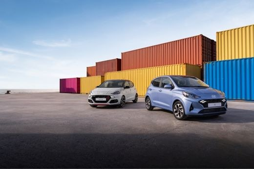
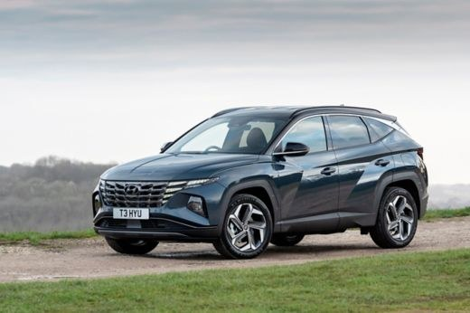
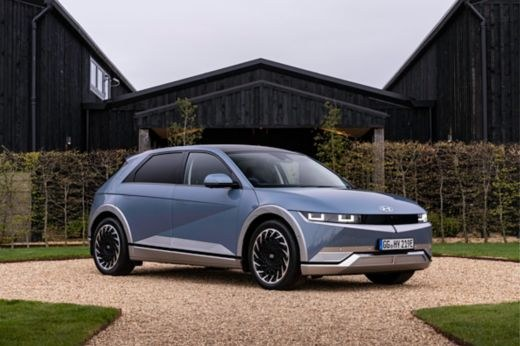

Лабораторная работа №2 · Вариант 7
Автомобили.
Разные характеры — одна таблица.
Сравниваем характеристики, изучаем HTML-таблицы и собираем страницу с помощью семантических тегов и блоков div.
Lamborghini, Voyah и Jaguar
Для технического сравнения выбраны Revuelto, FREE Sport и F-TYPE P300 Coupé. Более дорогие и дешёвые модели указаны в пределах выбранных примеров каждого бренда, без лимитированных серий и аукционов.
| Характеристика | Lamborghini | Voyah | Jaguar |
|---|---|---|---|
| Самая дорогая модель в выборке | Revuelto: около £446 000 (Великобритания, 2024) | DREAM: 8 490 000 ₽ без выгоды по трейд-ин (карточка автомобиля 2024 г.) | F-TYPE R 75 Convertible: £108 065 (прайс 2023 модельного года) |
| Самая дешёвая модель в выборке | Urus S: около £188 000 (Великобритания, 2023) | FREE Sport: от 5 890 000 ₽ по специальной программе (11.06.2024) | F-TYPE P300 Coupé: £62 235 (тот же прайс) |
| Модель для технического сравнения | Revuelto, спецификация 2024 | FREE Sport, 2024 | F-TYPE P300 Coupé |
| Двигатель | Подключаемый гибрид: V12 6,5 л + 3 электромотора; 1 015 л.с. | Последовательный гибрид: 1,5 л ДВС-генератор + 2 электромотора; 490 л.с. | Бензиновый I4 2,0 л с турбонаддувом; 300 л.с. |
| Расход топлива | 11,86 л/100 км + 10,1 кВт·ч/100 км (взвешенный WLTP) | 6,9 л/100 км (по спецификации, цикл WLTC) | Около 9 л/100 км (WLTP, зависит от комплектации) |
| Скорость: разгон 0–100 км/ч | 2,5 с | 4,8 с | 5,7 с |
| Экологическое соответствие | Euro 6, указано в брошюре | ОТТС для официальных российских автомобилей | Европейская омологация; выбросы P300 — 214 г CO₂/км в британском прайсе |
| Гарантийный срок | 3 года, без ограничения пробега; условия зависят от рынка | 5 лет или 100 000 км в России | 3 года, без ограничения пробега в Великобритании |
| Максимальная скорость | Более 350 км/ч | 200 км/ч | 250 км/ч |
| Тип трансмиссии | Роботизированная, два сцепления | Одноступенчатые понижающие редукторы; обычной КПП нет | Автоматическая |
| Количество передач вперёд | 8 | 1 фиксированное передаточное отношение на каждом приводе | 8 |
| Цены исторические, относятся к разным рынкам и условиям продажи; их нельзя напрямую сопоставлять между валютами. WLTP и WLTC — разные испытательные процедуры. ОТТС подтверждает соответствие требованиям, но не является экологической наградой. Ссылки на исходные данные приведены ниже. | |||
Подробнее о выбранных автомобилях
- Lamborghini Revuelto сочетает атмосферный V12 и электрическую тягу. Расход подключаемого гибрида зависит от заряда батареи.
- Voyah FREE Sport движется за счёт электромоторов, а бензиновый двигатель работает генератором.
- Jaguar F-TYPE P300 — заднеприводное двухместное спортивное купе с бензиновым двигателем.
Три модели Hyundai
Городской хэтчбек, семейный гибрид и электромобиль. Для воспроизводимого сравнения использованы архивные британские спецификации: i10 Advance 1.0 67PS 5MT (2023), TUCSON SE Connect Hybrid 230PS 6AT (2021) и IONIQ 5 SE Connect 58 kWh RWD (2021).

Hyundai i10
Компактный пятидверный хэтчбек. Версия Advance 1.0 с механической коробкой — самая доступная из трёх выбранных моделей.
Обновление представлено .
Безопасность и оснащение
- ABS, электронная стабилизация ESC (аналог ESP), фронтальные и боковые подушки, шторки.
- FCA: предупреждение и помощь при угрозе столкновения; удержание в полосе LKA и LFA.
- Bluetooth, Apple CarPlay и Android Auto. Отдельная точка Wi-Fi в базовом оснащении не заявлена.
“The passenger compartment remained stable in the offset frontal test.”
Euro NCAP, испытания i10, 2020.

Hyundai TUCSON
Версия SE Connect Hybrid объединяет бензиновый турбодвигатель 1,6 л и электромотор. В сравнении у неё самый большой багажник.
Старт продаж в Великобритании — .
Безопасность и оснащение
- ABS, ESC, фронтальные, боковые и центральная передняя подушки, шторки безопасности.
- FCA с распознаванием автомобилей, пешеходов и велосипедистов; LKA и LFA.
- Bluetooth и подключение смартфона. Отдельный Wi-Fi hotspot в выбранной базовой версии не заявлен.
“The passenger compartment of the TUCSON remained stable in the frontal offset test.”
Euro NCAP, испытания TUCSON, 2021.

Hyundai IONIQ 5
SE Connect с задним приводом и батареей 58 kWh. Нулевые выбросы из выхлопной трубы и колёсная база 3 м.
Первое поколение представлено в .
Безопасность и оснащение
- ABS и ESC, фронтальные, боковые подушки, шторки и центральная подушка.
- FCA, помощь на перекрёстках, контроль полосы и Highway Drive Assist.
- Bluetooth, Bluelink, CarPlay и Android Auto. Наличие мобильных онлайн-сервисов не означает наличие Wi-Fi hotspot.
“The passenger compartment of the IONIQ 5 remained stable in the frontal offset test.”
Euro NCAP, испытания IONIQ 5, 2021.
Все характеристики рядом
Данные относятся к выбранным версиям и годам, а не к текущему модельному ряду. Стартовые цены приведены в фунтах стерлингов для рынка Великобритании; в прайсах они обозначены как On The Road. Фото могут показывать другую комплектацию той же модели.
| Критерий | i10 · 2023 | TUCSON · 2021 | IONIQ 5 · 2021 |
|---|---|---|---|
| 1. Тип двигателя | Бензиновый, 1,0 л MPi; 67 л.с. | Гибрид HEV, 1,6 T-GDi + электромотор; суммарно 230 л.с. | Электрический; 170 л.с., батарея 58 kWh |
| 2. Расход топлива / энергии | 5,2 л/100 км | 5,6 л/100 км | Бензин не используется; 16,7 кВт·ч/100 км |
| 3. Тип трансмиссии | Механическая | Автоматическая, гидромеханическая | Одноступенчатый редуктор |
| 4. Количество передач вперёд | 5 | 6 | 1 |
| 5. Габариты Д × Ш × В, мм | 3 670 × 1 680 × 1 480 | 4 500 × 1 865 × 1 651 | 4 635 × 1 890 × 1 605 |
| 6. Багажник, сиденья подняты | 252 л | 616 л | 527 л (задний багажник) |
| 7. Активная и пассивная безопасность | ABS, ESC, подушки и шторки; FCA, LKA | ABS, ESC, подушки и шторки, центральная подушка; FCA, LKA | ABS, ESC, подушки и шторки, центральная подушка; FCA, LKA |
| 8. Euro NCAP | 3 из 5 звёзд (2020); защита взрослых 69% | 5 из 5 звёзд (2021); защита взрослых 86% | 5 из 5 звёзд (2021); защита взрослых 88% |
| 9. Разгон 0–100 км/ч | 14,8 с | 8,0 с | 8,5 с |
| 10. Максимальная скорость | 156 км/ч | 193 км/ч | 185 км/ч |
| 11. Начальная цена выбранной версии | £15 420 (06.04.2023) | £32 255 (прайс к началу продаж 2021) | £36 995 (релиз 2021) |
| 12. Wi-Fi и Bluetooth | Bluetooth — есть; отдельный Wi-Fi hotspot не заявлен | Bluetooth — есть; отдельный Wi-Fi hotspot не заявлен | Bluetooth — есть; отдельный Wi-Fi hotspot не заявлен |
| 13. Тормозная система | Передние вентилируемые дисковые, задние дисковые (британская спецификация) | Передние вентилируемые дисковые, задние дисковые | Вентилируемые дисковые спереди и сзади + рекуперация |
| 14. Предотвращение столкновений | FCA: автомобили, пешеходы, велосипедисты | FCA: автомобили, пешеходы, велосипедисты | FCA и помощь при повороте на перекрёстке |
| 15. Гарантия на автомобиль | 5 лет, без ограничения пробега | 5 лет, без ограничения пробега | 5 лет, без ограничения пробега; тяговая батарея — 8 лет / 100 000 миль |
| Расход — комбинированный WLTP. Ширина указана без зеркал. Скорость TUCSON и IONIQ 5 округлена из британских данных (120 и 115 миль/ч). В исходниках разгон дан как 0–62 миль/ч, то есть приблизительно 0–100 км/ч. Рейтинги безопасности относятся к испытаниям указанных лет и соответствующим поколениям. | |||
Вывод: i10 подходит для города и имеет минимальную начальную цену. TUCSON предлагает наибольший багажник и самый быстрый разгон в этой выборке. IONIQ 5 использует электрическую тягу и имеет самую длинную колёсную базу.
Мини-таблица на DIV
Повторим три критерия с помощью div и свойств display: table, table-row, table-cell.
Чем отличаются DIV и COL?
div — универсальный блочный контейнер; сам по себе не сообщает браузеру о табличных данных. Поэтому здесь добавлены роли доступности. col — элемент столбца настоящей HTML-таблицы, расположенный внутри colgroup. Он не создаёт ячейки и не содержит текст; позволяет оформлять сразу весь столбец. В больших таблицах выше первый столбец выделен именно с помощью col.
Контрольные вопросы
1. Как устроен базовый HTML-документ?
<!DOCTYPE html> включает стандартный режим HTML5. В html находятся head с кодировкой и заголовком title и body с содержимым страницы. Указываем язык lang="ru" и метатег viewport.
2. Какой из перечисленных форматов нельзя напрямую использовать в IMG?
RAW: браузеры обычно не отображают исходные файлы камеры через img. JPEG, PNG, GIF, SVG и WebP поддерживаются браузерами.
3. На какой версии HTML написана первая работа?
HTML5: исходный файл лабораторной №1 начинается с <!DOCTYPE html>. HTML — язык разметки.
4. Как вставить разрыв строки?
Тегом <br>. Это пустой элемент; закрывающий тег ему не нужен.
5. Станет ли локальный HTML доступен в Интернете?
Нет. Открытие файла на своём компьютере не публикует его в сети. Для общего доступа нужен хостинг, например GitHub Pages.
Источники данных
Цены и комплектации сохранены как учебный исторический набор; это не актуальное предложение о продаже. Проверка ссылок: .
Hyundai: спецификации, цены и фотографии
- i10: официальный релиз Hyundai UK, 06.04.2023; британские технические данные.
- TUCSON: официальный релиз к старту продаж 2021; технические данные; прайс-лист.
- IONIQ 5: официальный релиз Hyundai UK, 2021; спецификация SE Connect 58 kWh.
- Испытания Euro NCAP: i10 (2020), TUCSON (2021), IONIQ 5 (2021). Процентные шкалы показывают защиту взрослых, а не общий балл автомобиля.
Данные общего задания
- Lamborghini: брошюра Revuelto 2024, гарантия; исторические цены: Top Gear — Revuelto и Auto Express — Urus S.
- Voyah: релиз FREE Sport от 11.06.2024 с условиями специальной цены, гарантией и ОТТС, спецификация FREE Sport, DREAM: примеры автомобилей в наличии. Скидки на FREE требуют выполнения условий программы из релиза.
- Jaguar: британский прайс F-TYPE 2023 модельного года, техническая брошюра F-TYPE, гарантия Jaguar UK.
Об иллюстрациях
Фотографии Hyundai взяты из указанных пресс-релизов Hyundai Newsroom и используются в учебной работе. Подписи обозначают модель, а не гарантируют точное совпадение комплектации.